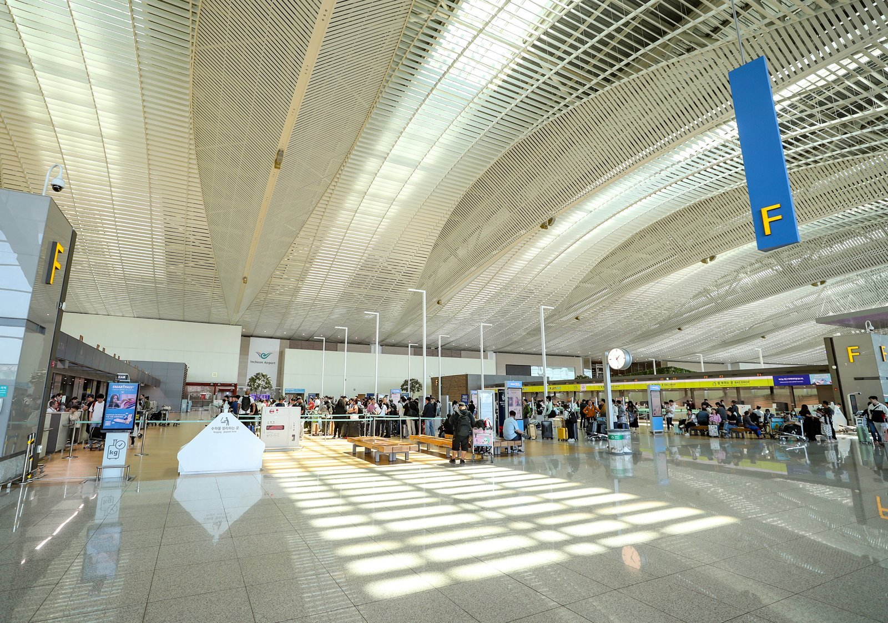
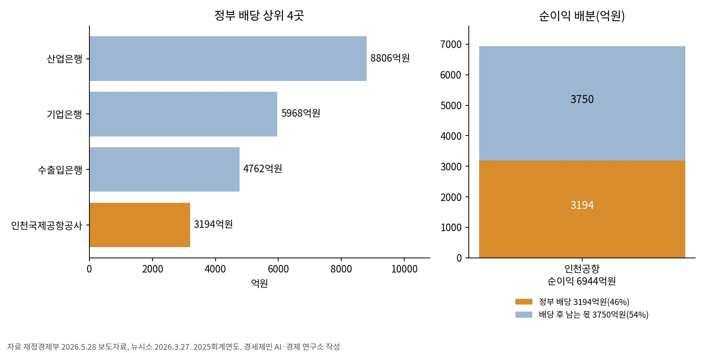
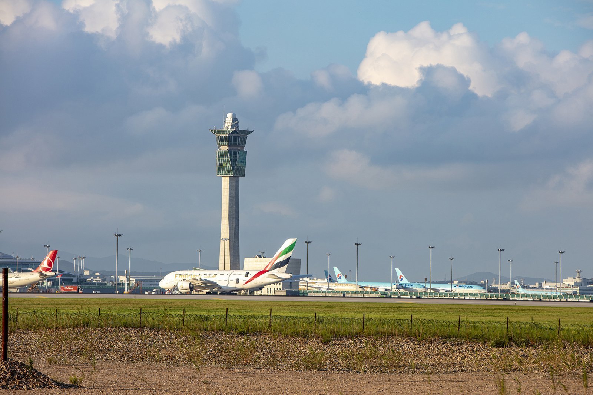

[글로벌 인천공항⑰] 인천공항 배당 3194억원, 2011년 매각대금 상임위 삭감
순이익 6944억원 중 46% 정부 납부, 배당액 4위
2008년 49% 매각 방침, 2011년 삭감, 2012년 다음 정권 논의
소유 형태 연구 효율·요금 결과 비교, 배당은 기관·부처 협의로 결정
AI경제저널=김갑봉 기자 | 인천국제공항공사는 2025회계연도 순이익 6944억원 가운데 3194억원을 정부에 배당했다. 배당성향(총배당금을 당기순이익으로 나눈 값)은 46.00%다. 배당 실시 20개 기관 배당성향의 단순평균 40.90%보다 5.10%포인트 높다. 배당액은 4위다.
재정경제부 표 주석에 따르면 산업은행 배당성향 51.34%에는 정책모펀드 회수자금 2494억원이 들어 있다. 산업은행 배당성향은 이를 제외하면 36.80%다.
정부는 2008년 공사 지분 49% 매각 방침을 정했다. 2011년 국회 국토해양위원회는 매각 예상대금을 세입예산에서 삭감했다. 2012년 7월 새누리당은 당정 협의에서 다음 정권에서 논의하는 게 바람직하다고 밝혔다.
순이익 6944억원 중 3194억원, 정부 배당 4위
배당성향 46%는 순이익의 46%를 정부에 냈다는 뜻이다. 나머지 54%인 약 3750억원은 공사에 남는다.

재정경제부는 2026년 5월 28일 인천공항 3194억원을 포함한 정부배당이 2조7951억원으로 확정됐다고 공표했다. 40개 정부출자기관 중 20곳이 배당했다.
나머지 20곳은 당기순손실, 이월결손금(앞선 연도에서 넘어온 손실) 보전 등으로 배당하지 못했다. 기관별 배당액은 산업은행 8806억원, 기업은행 5968억원, 수출입은행 4762억원 순이고 인천국제공항공사 3194억원이 뒤를 잇는다.
재정경제부 표에서 인천공항 배당금은 특별회계·기금 열에만 잡혔다. 같은 표에서 교통 공기업은 인천항만공사 287억원, 한국도로공사 260억원, 부산항만공사 109억원, 울산항만공사 92억원이 배당했다. 한국공항공사와 한국철도공사는 배당 칸이 비었다.

지분 49% 매각 방침, 2011년 예산 삭감과 2012년 당정 협의
정부는 2008년 8월 11일 공공기관 선진화 계획에서 인천국제공항공사 지분 49% 매각 방침을 정했다.
국회예산정책처는 2011년 10월 31일 「2012년 세입예산안 쟁점 분석」에서 산업은행·중소기업은행·인천국제공항공사 매각이 순조롭지 않다고 봤다.
2011년 11월 8일 국회 국토해양위원회는 매각 예상대금 4314억원을 2012년도 세입예산에서 전액 삭감했다.

정부 안은 지분 49%를 팔고 51%를 보유하는 것이었다.
정부는 2014년 시작하는 3단계 공사 등 투자 재원 마련과 허브공항 경쟁력 강화를 이유로 들었다.
새누리당은 2012년 7월 17일 당정 협의에서 인천공항 지분 매각은 다음 정권에서 논의하는 게 바람직하다고 밝혔다.
소유 형태 연구, 효율과 항공 관련 요금 비교
2012년 매각안은 성사되지 않았다.
2006년 연구는 주요 공항 자료로 소유 형태별 효율성을 비교했다. 정부 과반 소유와 다단계 정부 소유 공항은 민간 과반 소유 공항보다 효율이 유의하게 낮았고 다른 공공 소유 형태는 유의한 열위가 없었다. 민간 과반 소유 공항은 미국을 뺀 지역에서 항공 관련 요금이 낮았다.
2008년 발표된 연구는 세계 주요 공항 패널 자료에 확률 프런티어 분석(최고 효율 공항을 기준선으로 삼는 통계 기법)을 적용했다. 정부 과반 혼합 소유는 100% 정부 소유 공기업보다도 피해야 한다고 결론 냈다. 민영화하려면 민간이 과반을 가져야 한다고도 했다.
2014년 발표된 연구는 유럽과 호주 공항 10년 자료에 자료포락분석(DEA)을 적용했다. 경쟁이 약한 환경에서 공공 공항은 완전 민영 공항보다 비용효율이 낮았다. 경쟁이 있는 환경에서는 비용효율이 비슷했지만 민영 공항이 항공 관련 요금을 더 높게 매겼다.
공공 지분이 과반인 혼합 형태는 경쟁 수준과 관계없이 비용효율적이지도 가격이 낮지도 않았다. 연구는 경쟁이 약한 환경에서는 소유 형태와 관계없이 경쟁 압력을 대신할 규제가 필요하다고 봤다. 잠재적 경쟁이 있으면 규제가 효율과 가격 책정을 방해할 수 있다고도 봤다.
배당 결정 절차, 순이익과 재무건전성 협의
재정경제부가 밝힌 배당 절차는 1월 배당기초자료 제출, 2월 배당협의체 운영, 3~4월 배당 확정, 5월 국회 보고와 공표 순이다. 정부배당은 순이익 규모와 재무건전성을 고려해 기관과 소관부처가 협의해 정했다.
20개 기관 평균 배당성향은 전년 39.72%에서 40.90%로 1.18%포인트 올랐다.
참고문헌
기관 자료
- 재정경제부(2026). 정부출자기관의 2026년 정부배당 2조7951억원으로 확정(보도자료). 2026년 5월 28일 배포(정책브리핑 게시 5월 29일). https://www.korea.kr/briefing/pressReleaseView.do?newsId=156764271
- 국회예산정책처(2011). 「2012년 세입예산안 쟁점 분석 보고서」 발간(보도자료). 2011년 10월 31일. https://nabo.go.kr/ko/notice/releasesView.do?idx=3328
연구 논문
- Oum, T. H., Adler, N., & Yu, C. (2006). Privatization, corporatization, ownership forms and their effects on the performance of the world's major airports. Journal of Air Transport Management, 12(3), 109-121. https://doi.org/10.1016/j.jairtraman.2005.11.003
- Oum, T. H., Yan, J., & Yu, C. (2008). Ownership forms matter for airport efficiency: A stochastic frontier investigation of worldwide airports. Journal of Urban Economics, 64(2), 422-435. https://doi.org/10.1016/j.jue.2008.03.001
- Adler, N., & Liebert, V. (2014). Joint impact of competition, ownership form and economic regulation on airport performance and pricing. Transportation Research Part A: Policy and Practice, 64, 92-109. https://doi.org/10.1016/j.tra.2014.03.008
사진 출처
- [사진1] 인천국제공항공사, 「인천국제공항 공항 전경 및 이미지」(2025년 7월 17일), T2 출국장.JPG, 공공누리 제1유형, 공공데이터포털. https://www.data.go.kr/data/15130703/fileData.do
- [사진2] 인천국제공항공사, 「인천국제공항 공항 전경 및 이미지」(2025년 7월 17일), 관제탑.jpg, 공공누리 제1유형, 공공데이터포털. https://www.data.go.kr/data/15130703/fileData.do
※ 이 기사는 AI 프로그램 클로드를 활용해 작성했습니다.
관련기사
- [글로벌 인천공항⑯] SAF 감면 200편 1740만원, 구매비 지원은 예산안 밖
- [글로벌 인천공항⑮] 해외 항공기 4001대 들인 샤먼, 인천공항 정비도 남의 물량으로
- [글로벌 인천공항⑭] 한중 노선 국적사 몫 54%→46%, 베이징·상하이 늘려야
- [글로벌 인천공항⑬] 인천공항 44% 외국인, 연말 끝나는 비자 특례 상설로
저작권자 © AI경제저널 무단전재 및 재배포, AI학습 및 활용 금지